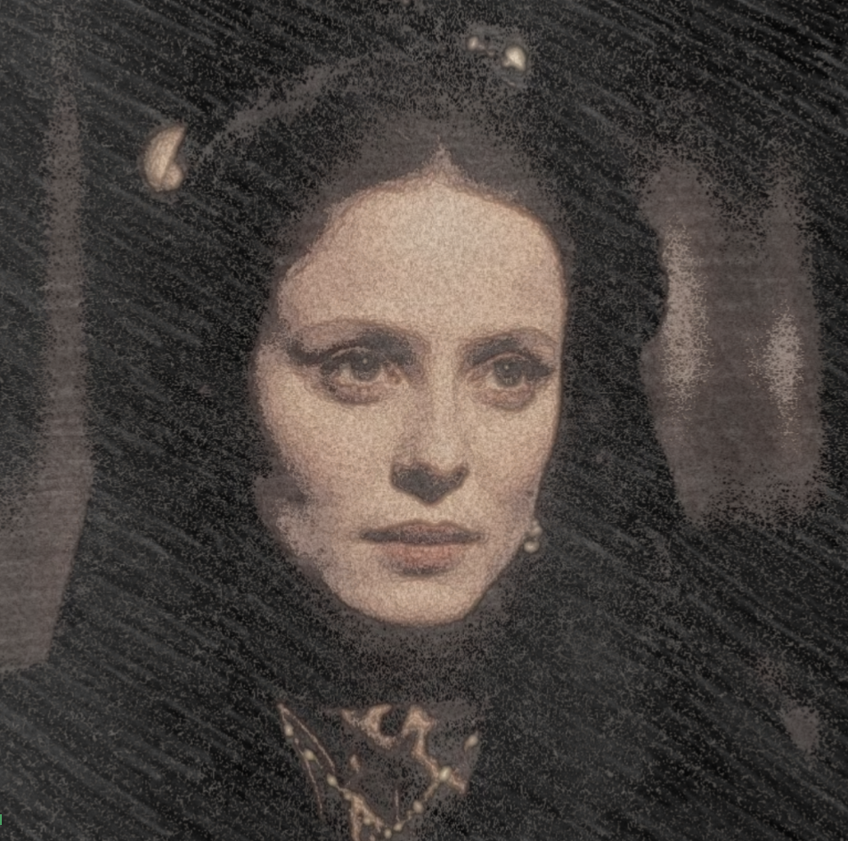

Filoginia - Antología escolar de escritoras hispánicas contemporáneas
Ana Ozores
Retrato de Ana Ozores
Alejandra Gómez. Retrato de Ana Ozores(CC BY-SA)
Alejandra Gómez, basado en RTVE. Retrato gráfico de Ana Ozores(CC BY-SA)
¿Quién es Ana Ozores?, por Alejandra Gómez
Ana Ozores es conocida por ser la protagonista de La Regenta, obra maestra de Leopoldo Alas, más conocido por Clarín.
Bien, pues empecemos con la descripción / biografía… De esta mujer.
Por si no lo sabíais Ana fué la esposa de Víctor Quintanar. Se casaron cuando ambos eran muy jóvenes y realmente no tenían una relación de amor. No podía tener hijos y esa frustración la fue calmando gracias a la iglesia.
Como podéis ver en la bonita imagen Ana era muy bella y tenía la cara blanca. Tenía las cejas muy finas los ojos oscuros y normalmente llevaba el pelo recogido. Su pelo era oscuro y liso y tenía una mirada desafiante.
Ana tenía 27 años, no tenía hijos y desgraciadamente no se acuerda de su madre.
Es hija de un militar librepensador y de una costurera italiana.
Su matrimonio le abre las puertas de la mejor sociedad vetustense, pero su hermosura, su delicadeza, su superioridad a la vez que le abre el camino la convierten en víctima de la envidia. Su vida está movida por un continuo juego de ilusión y desilusión, lanzada en busca de algo superior que la llene y que no encuentra. La Regenta buscará en la religión un sentido a su vida monótona y aburrida.
Ana Ozores es una mujer que busca definirse en su condición de tal a lo largo de la novela, ya que cuando ésta comienza carece de señas de identidad femeninas como la sexualidad y la maternidad; tampoco encuentra su identidad como mujer a través de la escritura.
Muchos conoceréis a Ana por el hecho de que le engañó a su marido con un amante suyo. Este amante se llamaba Don Álvaro y ella se encontraba totalmente enamorada de él, muchísimo más que de Víctor.
Desgraciadamente por culpa de muchos rumores en el pueblo Víctor se acabó enterando de lo sucedido, es decir, de que le estaba siendo infiel con otro hombre. Víctor decidió desafiar a Álvaro y finalmente ganó su amante secreto, Don Álvaro. En consecuencia de esta batalla el marido de Ana falleció.
El pueblo no tardó en enterarse de lo sucedido y esto dio lugar a la marginación del pueblo hacia Ana.
Finalmente Ana cayó en una enfermedad y no pudo salir de ahí.
Alejandra Gómez. Leopoldo Alas, La Regenta(CC BY-SA)
Introducción
La Regenta es la gran novela del XIX español, una de las más destacadas en aquel entonces y permanece siendo una gran obra. Esta obra fue escrita por Leopoldo Alas. Leopoldo Alas nació en el año 1852 en Zamora, desgraciadamente, falleció años más tarde en el año 1901.
Las pasiones, odios, celos y obsesiones que despierta Ana Ozores en Vetusta - trasunto de Oviedo - sirve a "Clarín" para llevar a cabo una implacable radiografía de la burguesía española finisecular.
La Regenta se escribió en dos partes, la primera de ellas en el 1884 y la segunda en el 1885. El ser publicada en esas fechas trajo como consecuencia que en su tiempo e incluso después, la obra pudiera ser considerada como una de las más atrevidas manifestaciones del naturalismo novelesco.
Pero, poco a poco , se ha ido rebajando esta consideración. Lo que hizo Leopoldo fue contar esta historia por fascículos.
¿Qué es un fascículo? = Un fascículo es cada una de las partes de un libro que se publican periódicamente, generalmente en forma de cuaderno impreso.
¡Se dice que tenía que ir tan rápido, ya que la gente le enviaba partes de esta historia que hasta en algunos puntos se cambiaban los nombres de los personajes porque él se equivocaba!
Es de destacar el inusual número de personajes. Esto podía haber convertido la Regenta en un laberinto de no haber tenido el autor un cuidado exquisito en no perder nunca de vista cuáles eran el tema y el sentido principales de la obra.
El narrador de esta historia evita identificarse con todos los personajes de la historia. Se manifiesta a veces desde el perspectivismo, que consiste en emplear las opiniones de otros para presentar a personajes aún no introducidos en la novela.
Los principales o por así decirlo los más conflictivos son Ana Ozores, Don Fermín de Pas y Don Álvaro Mesía.
La estructura se divide en dos partes.
1 → cap I/XV ( presentación de personajes y de los alrededores que envuelven la historia)
Se desarrolla en aproximadamente 3 días.
2 → cap XVI/XXX (conflictos de amor y situaciones de mucha accion y intriga)
Se desarrolla en bastante tiempo, aproximadamente 3 años.
OBRA
La familia de los Ozores era una de las más antiguas de Vetusta. Era el tal apellido de muchos condes y marqueses, y pocos nobles había en la ciudad que no fueran, por un lado o por otro, algo parientes de tan ilustre linaje.
Don Carlos, padre de Ana, era el primogénito de un segundón del conde de Ozores. Don Carlos tuvo dos hermanas, Anunciación y Águeda, que con su padre habitaron mucho tiempo el caserón de sus mayores. La rama principal, la de los condes, vivía años hacía emigrada.
El primogénito del segundón quiso tener una carrera, ser algo más que heredero de algunas caserías, unos cuantos foros y un palacio achacoso de goteras. Fue ingeniero militar. Se portó como un valiente; en muchas batallas demostró grandes conocimientos en el arte de Vauban, construyó duraderos y bien dispuestos fuertes en varias costas, y llegó pronto a coronel de ejército, comandante del cuerpo. Cansado de casamatas, cortinas, paralelas y castillos, procurose un empleo en la corte y fue perdiendo sus aficiones militares, quedándose sólo con las científicas: prefirió la física, las matemáticas a las aplicaciones de tales ciencias, al arte, y cada día fue menos guerrero. Pero al mismo tiempo se entregaba a las delicias de Capua, y por fin, después de muchos amoríos, tuvo un amor serio, una pasión de sabio (o cosa parecida) que ya no es joven.
Loco de amor se casódon Carlos Ozores a los treinta y cinco años con una humilde modista italiana que vivía en medio de seducciones sin cuento, honrada y pobre. Esta fue la madre de Ana que,al nacer, se quedó sin ella.
-«¡Menos mal!» -pensaban las hermanas de don Carlos allá en su caserón de Vetusta.
Su matrimonio había originado al coronel un rompimiento con su familia. Se escribieron dos cartas secas y no hubo más relaciones.
-Si viviera mi padre -pensaba Ozores- de fijo perdonaba este matrimonio desigual.
-¡Si viviera padre, moriría del disgusto! -decían las solteronas implacables.
Toda la nobleza vetustense aprobaba la conducta de aquellas señoritas, que vieron un castigo de Dios en el desgraciado puerperio de la modista italiana, su cuñada indigna.
El palacio de los Ozores era de don Carlos; sus hermanas se lo dijeron en otra carta fría y lacónica:
«Estaban dispuestas a abandonarlo, si él lo exigía; sólo le pedían que pensase cómo se había de conservar aquel resto precioso de tanta nobleza».
El coronel contestó «que por Dios y todos los santos continuasen viviendo donde habían nacido, que él se lo suplicaba por bien de la misma finca, que sin ellas se vendría a tierra».
Las solteronas, sin contestar ni transigir en lo del matrimonio, se quedaron en el palacio para que no se derrumbara.
A don Carlos le dolió mucho que ni siquiera se le preguntase por su hija. La nobleza vetustense opinó que muerto el perro no se acabase la rabia; que la muerte providencial de la modista no era motivo suficiente para hacer las paces con el infame don Carlos ni para enterarse de la suerte de su hija.
Tiempo había para proteger a la niña, sin menoscabo de la dignidad, si, como era de presumir, la conducta loca de su padre le arrastraba a la pobreza. Además, se corrió por Vetusta que don Carlos se había hecho masón, republicano y por consiguiente ateo. Sus hermanas se vistieron de negro y en el gran salón, en el estrado, recibieron a toda la aristocracia de Vetusta, como si se tratara de visitas de duelo.
La estancia estaba casi a obscuras; por los grandes balcones no se dejaba pasar más que un rayo de luz; se hablaba poco, se suspiraba y se oía el aleteo de los abanicos.
-¡Cuánto mejor hubiese sido que se hubiera vuelto loco! -exclamó el marqués de Vegallana, jefe del partido conservador de Vetusta.
-¡Qué... loco! -contestó una de las hermanas, doña Anunciación-. Diga usted, marqués, que ojalá Dios se acordase de él, antes que verle así.
Hubo unánime aprobación por señas. Muchas cabezas se inclinaron lánguidamente; y se volvió a suspirar. Aquello del republicanismo no necesitaba comentarios.
CONCLUSIÓN
La novela nos presenta a una sociedad sumamente estructurada. Este dato le sirve al lector para imaginar cómo sería la sociedad de la época, con el alto clero siempre vinculado con la aristocracia.
Gracias a esta obra podemos ver cómo era la política en aquel entonces.
El autor expresa sus emociones o también podríamos decir que se pone en la piel de sus protagonistas. Se expresa el fracaso en todo pero especialmente en el amor.
Este libro es sin duda, una obra maestra de la literatura española.
La recreación de la vida de Ana Ozores llega a encoger el corazón al ser una esclava de su propio destino. Ambientado en la España de la Restauración y dentro de una familia burguesa, Ana estaba casada con un hombre mucho mayor que ella por intereses familiares. Dentro de una ciudad opresiva, los convencionalismos sociales ahogan la vida verde de esta mujer condenada a la soledad.